электронный
ресурс по учебной дисциплине 1-58 01 01 - "ИНЖЕНЕРНО-ПСИХОЛОГИЧЕСКОЕ ОБЕСПЕЧЕНИЕ ИНФОРМАЦИОННЫХ ТЕХНОЛОГИЙ"
|
||
| Оглавление | Программа | Теория | Практика| Контроль знаний | Об авторах | ||
|
Содержание
ТЕМА 8 СБОРКА, ГЕРМЕТИЗАЦИЯ МИКРОИЗДЕЛИЙ § 8.1 Технология сборки, герметизации микроизделий § 8.2 Технологическое оборудование для проведения сборки, герметизации микроизделий § 8.1 Технология сборки, герметизации микроизделий. Методы сборки и герметизация. Разделение пластин и их сортировка. Кремниевые пластины могут быть разделены на отдельные кристаллы различными способами, которые предусматривают скрайбирование поверхности кремния, разламывание пластины на отдельные кристаллы, если скрайбирование не проникает на всю толщину пластины, и сортировку электрически годных отдельных кристаллов в форме, пригодной для следующей стадии сборки. Частичное скрайбирование может быть выполнено импульсным лазерным лучом, скрайбирующим инструментом с алмазным наконечником и полотном пилы с алмазной кромкой. Алмазный пропил предпочтительнее для частичного скрайбирования и полного разделения пластины, так как обеспечивает получение более ровного края со значительно меньшими сколами и трещинами. Монтаж кристаллов. Монтаж кристаллов состоит из двух стадий. На первой стадии кристалл обратной стороной механически прикрепляют к соответствующему основанию. Это прикрепление иногда позволяет создать электрические контакты к обратной стороне кристалла. Двумя основными методами монтажа кристалла является соединение его с корпусом твердыми припоями или эвтектикой и полимерами. На второй стадии контактные площадки со схемной стороны кристалла электрически соединяются с выводами корпуса. Существуют три метода подсоединения к контактным площадкам кристалла: проволочное соединение, автоматизированное соединение на ленточном носителе и соединение методом перевернутого кристалла. Соединение кристалла эвтектикой. На рис. 8.1 показана схема соединения кристалла эвтектикой. При таком способе соединения кристалл металлургически прикрепляется к материалу подложки (обычно металлической выводной рамке, изготовленной из Сu или сплава Fe—Ni, либо керамической подложке, состоящей из 90—99,5% Аl2О3). 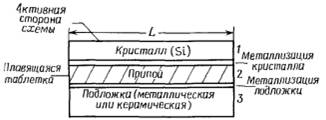 Рисунок 8.1 – Структура кремниевого кристалла, соединенного металлическим припоем с подложкой Для обеспечения смачиваемости обратной поверхности кристалла расплавом материала таблетки, которая представляет собой тонкую пластину (обычно толщиной <0,05 мм) из соответствующего припоя, на обратной стороне кристалла часто создают слой металлизации. Материал подложки обычно металлизируют слоем Ag (выводная рамка) или Au (выводная рамка или керамическая подложка). Присоединение кристалла припоем к герметизированному корпусу из тугоплавкой керамики или к выводной рамке Ni—Fe обычно производится таблеткой из припоя состава Au или Au — 2% Si. В обоих случаях разница значений коэффициентов расширения между кремнием и подложкой относительно невелика. Кроме того, в обоих случаях при механической отмывке соединяемых поверхностей и температуре соединения выше 370 °С (температура плавления эвтектики) материал таблетки реагирует с кремнием. При этом образуется структура эвтектического состава Au + 3,6% Si, которая затем обогащается кремнием1'. Поскольку в составе сложной структуры увеличивается содержание кремния, он затвердевает с образованием соединения кристалла. Во многих случаях для совместимости с другими стадиями процесса необходимы более низкая температура процесса соединения или более вязкий припой. Соединение кристалла полимерным клеем. В качестве материала для соединения кристалла в настоящее время значительный интерес представляет эпоксидный клей с серебряным наполнителем, хотя растет интерес и к полиимидным клеям из-за их способности противостоять более высоким рабочим температурам по сравнению с эпоксидными клеями. Серебряный наполнитель делает эти материалы как электропроводными для обеспечения низкого сопротивления между кристаллом и подложкой, так и теплопроводными, в результате чего существует хороший теплоотвод от кристалла к основанию корпуса. Для соединения кристалла используют эпоксидные клеи, так как по сравнению с твердыми припоями с высоким содержанием золота они имеют меньший термический коэффициент линейного расширения, являются гибкими и мягкими и позволяют автоматизировать процесс соединения. Например, при производстве пластмассовых плоских корпусов с двухрядным расположением вертикальных выводов эпоксидный клей может быть быстро нанесен на поверхность кристалла, а кристалл помещен в корпус с помощью высокоскоростной установки сборки без отмывки. Тем не менее при монтаже кристалла эпоксидными клеями необходимо проведение металлизации кристалла и подложки. Поскольку эпоксидные клеи являются термореактивными материалами (полимеризуются при нагревании), они должны быть подвергнуты термообработке при определенной температуре для завершения процесса монтажа кристалла. Обычная температура термообработки лежит в диапазоне 125—175°С. Вообще качество соединения кристалла эпоксидными клеями такое же или даже выше, чем при соединении металлическими припоями, за исключением применения в особо жестких режимах функционирования (при высоких температурах, большом токе через соединение кристалла или при предъявлении повышенных требований к тепловым характеристикам) либо в приборах с очень высокой поверхностной чувствительностью. Соединение проволокой. Соединение проволокой является наиболее важным способом монтажа кремниевых ИС. На рис. 8.2 показана последовательность сборки с использованием такого вида соединения. Соединение проволокой всегда выполняется после того, как ИС отсортированы из разделенной на кристаллы пластины, а кристалл смонтирован в корпусе. Оно может быть выполнено золотой проволокой методом термокомпрессии, ультразвуковым и термозвуковым методами или алюминиевой проволокой ультразвуковым методом. 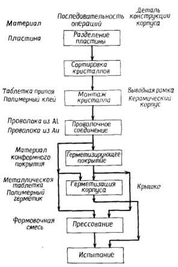 Рисунок 8.2 – Последовательность операций сборки кристаллов в пластмассовых и керамических корпусах с использованием проволочных соединений Обычно золотую проволоку соединяют методом шарика — клина, т. е. шариком на контактной площадке кристалла и клином на подложке корпуса (рис. 8.3), тогда как алюминиевую проволоку — методом клина — клина. Одним из преимуществ метода шарика — клина является возможность выполнения соединения клином по дуге вокруг шарикового контакта (рис. 8.3,е). Физическая форма соединений клин — клин предполагает линейное расположение соединений, т. е. ориентация клина на контактной площадке кристалла определяет направление расположения проволоки, оканчивающейся соединением клином на корпусе. Универсальность метода шарика — клина предполагает и большие возможности по автоматизации процесса сборки. 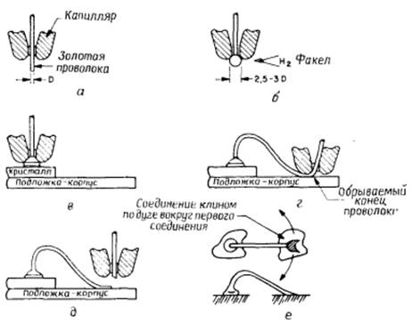 а – золотая проволока в капилляре; б – образование шарика при помещении конца золотой проволоки в водородный факел или путем емкостного разряда; в – соединение, выполненное путем одновременного приложения вертикальной нагрузки к шарику и ультразвукового возбуждения материала проволоки (кристалл и подложка должны быть отдельно нагреты до ~ 150° С); г – проволока согнута в петлю и присоединена к корпусу клином под действием нагрузки и ультразвукового возбуждения; д – проволока оборвана, а клинообразный капилляр готов к проведению операции п. а; е – геометрия соединения шариком-клином, позволяющего выполнять высокоскоростной монтаж Рисунок 8.3 – Термозвуковая сварка золотой проволокой методом шарика-клина Поскольку соединение однородным металлом предпочтительнее, качество соединения алюминиевой проволоки с алюминиевой контактной площадкой выше, чем соединение золотой проволоки с алюминием. В системе золото — алюминий происходит образование интерметаллических соединений. Это особенно важно в случае высокотемпературной обработки контакта при последующих операциях, таких, как герметизация крышки стеклом. В следующих разделах будут рассмотрены процесс ультразвуковой сварки, некоторые металлургические проблемы, связанные с взаимодействием золота и алюминия. Несмотря на широкое распространение термокомпрессионной сварки, мы не будем подробно рассматривать ее в дальнейшем, поскольку в настоящее время она заменяется на термозвуковую сварку. Процесс ультразвуковой сварки. В то время как проволока находится под нагрузкой, механическое перемещение, или вибрация, инструмента для ультразвуковой сварки вызывает скачок уплотнения на алюминиевой контактной площадке. Распространение волнового фронта по проволоке обусловливает образование волнистой структуры посредством воздействия напряжения сдвига в алюминиевой контактной площадке перпендикулярно направлению вибраций. До начала (или во время) движения волнового фронта ультразвуковая энергия поглощается проволокой, при этом последняя размягчается и под действием нагрузки течет, разрывая поверхностный окисел и оставляя незащищенной свежую поверхность проволоки и контактной площадки. Эта свежая незащищенная поверхность металла быстро сваривается. Автоматизированное соединение на ленточном носителе. На рис. 8.4 приведена последовательность процесса монтажа кристалла на ленточном носителе и сборки корпуса. Автоматизированное соединение на ленточном носителе представляет собой процесс, при котором заранее изготовленные химическим вытравливанием медные лепестки ленты одновременно присоединяют термокомпрессионной сваркой или пайкой эвтектикой на основе золота и олова к каждому столбику прибора на кремниевом кристалле. Столбики формируют путем осаждения золота на алюминиевые контактные площадки; при этом обеспечивают качественную поверхность для надежного термокомпрессионного соединения. (Процесс создания столбиков описан ниже.) 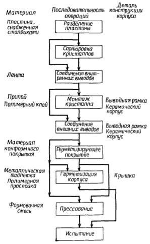 Рисунок 8.4 – Последовательность процесса сборки корпусов с использованием автоматизированного соединения на ленточном носителе Рис. 8.5 поясняет принцип автоматизированного соединения кристалла на ленточном носителе. Следует отметить, что одновременно с процессом соединения ведется сортировка кристаллов (рис. 8.5, г и д). В некоторых случаях может оказаться предпочтительным соединение на ленте предварительно отсортированных кристаллов. В одном из вариантов соединения на ленточном носителе столбики вытравливают на ленте вместо осаждения их на пластине. Ниже будут о писаны такие аспекты ленточной технологии, как процесс термокомпрессионной сварки; присоединение кристалла эвтектикой; формирование, виды и особенности использования лент; обработка пластин, а также сопряжение кристаллов, смонтированных на ленте, с корпусами различных конструкций. 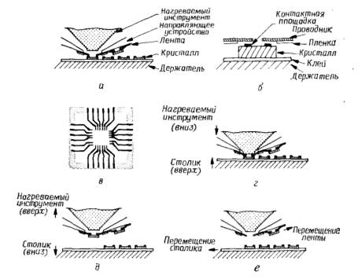 а – лента, совмещенная с кристаллом со столбиками; б – увеличенное изображение лепестков ленты и кристалла после совмещения; в – вид сверху на лепескт ленты, поддерживаемые полимерной пленкой; г – нагретый интсрумент, прижимающий лепестки ленты к столбикам контактных площадок кристалла, с помощью которого выполняется термокомпресионное соединение; д – нагрев для извлечения кристалла из матрицы; е – лента и кристалл, размещенные для выполнения следующего соединения Рисунок 8.5 – Процесс соединения внутренних выводов при автоматизированном монтаже кристалла на ленточном носителе с извлечением из матрицы кристаллов Как двух-, так и трехслойная лента может быть широко использована в технологии СБИС. Поскольку эти ленты могут быть изготовлены с соединительными лепестками шириной 50 мкм, расположенными на расстоянии 100 мкм друг от друга, достигается очень высокая плотность соединений к ИС. Кроме того, использование трехслойной ленты позволяет проводить испытания кристаллов и отбраковывать их перед помещением в корпус. На рис. 8.6 показан 144-контактный модуль, сформированный на основе трехслойной ленты. 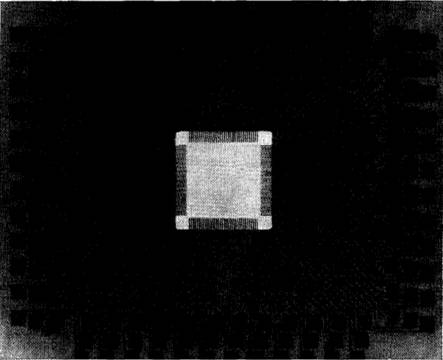 Рисунок 8.6 – 144-контактный модуль, полученный методом автоматизированного соединения на ленточном носителе, для которого предусмотрена возможность испытания кристаллов ИС Обработка пластин. Для подготовки кристаллов к соединению на ленточном носителе используются два основных метода. Выбор метода зависит от типа ленты. При использовании первого и наиболее простого метода не проводится никакой дополнительной обработки алюминиевых контактных площадок, кроме вскрытия пассивирующей пленки обычным способом. Таким методом подготавливают поверхность кристалла перед монтажом на одно- или двухслойной ленте, снабженной столбиками. Ленты со столбиками имеют малую величину отношения W0/H0 при соединении, таким образом, для выполнения качественного соединения необходимы большие деформации. Такие деформации возникают вследствие значительных вертикальных напряжений, которые могут привести к разрушению лежащих под соединяемой областью диэлектрических или кремниевых слоев. Чтобы избежать этого, можно подвести к соединению ультразвуковую энергию, однако этот метод не является широкодоступным. Основное преимущество применения лент со столбиками — отсутствие необходимости проведения дополнительной обработки поверхности кристалла кроме обычно используемой при выполнении проволочных соединений. Наиболее успешным методом обработки пластин при автоматизированном соединении на ленточном носителе является создание столбиков из золота, полученных электролитическим осаждением, или меди, покрытой золотом, на алюминиевых контактных площадках кристалла при его монтировании на одно-, двух- и трехслойной лентах . На рис. 8.7 показана последовательность формирования столбиков золота на алюминиевых контактных площадках приборов после вскрытия пассивирующего слоя. Критической стадией, влияющей на выход годных приборов, является селективное травление слоев, полученных методом вакуумного испарения или ионного распыления (рис. 8.7, е). При химическом стравливании этих слоев травитель может проникать в пассивирующее покрытие и растворять легкокорродирующее алюминиевое межкомпонентное соединение. Для избежания связанных с этим явлением технологических потерь применяется несколько процессов, включая плазменное травление. Стоимость всех дополнительных процессов обработки пластин входит в стоимость годного кристалла на пластине. Это повышение стоимости кристалла и технологические потери из-за травления алюминия делают процесс создания столбиков на пластине менее привлекательным, чем выполнение проволочного соединения. Применение автоматизированного соединения на ленточном носителе. Автоматизированное соединение на ленточном носителе используется для монтажа кристаллов небольшого размера в плоском корпусе с двухрядным расположением вертикальных выводов, где стоимость процесса создания столбика на прибор низка и невелики потери из-за травления металлизации (вследствие малых размеров кристалла), а также для подсоединения кристаллов СБИС.
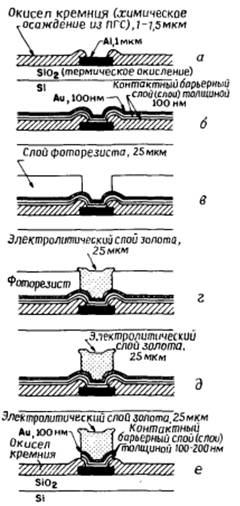 а — пластина с предварительно сформированной ИС, подвергнутая операциям очистки и ионного травления: б — создание контактного барьерного слоя (служащего также проводящим слоем при электролитическом осаждении золота методом ионного распыления) со слоем золота для предотвращения окисления; в — нанесение тол-стопленочного фоторезиста толщиной 25 мкм: г — электролитическое осаждение слоя золота толщиной —25 мкм для образования столбиков: д —снятие резиста; е — удаление проводящих тонких пленок химическим травлением Рисунок 8.7 – Последовательность процесса формирования золотых столбиков на алюминиевых контактных площадках приборов Примером применения автоматизированного соединения на ленточном носителе может служить многокристальный модуль для ЭВМ, где кристаллы сформированы на ленте, подвергаемой впоследствии тестированию. Каждый кристалл может быть тщательно испытан или отбракован перед сборкой, что невозможно в случае использования приборов с проволочным соединением к незащищенной алюминиевой контактной площадке. Типы корпусов и технология их производства. Производство корпусов для отдельных кристаллов в основном базируется на технологии тугоплавкой керамики или использовании выводных рамок и формованных пластмасс. Керамические корпусы обычно применяются для герметизации современных приборов, где требуется максимальная надежность. Для обычных приборов, где критичным параметром является стоимость и необходимо герметизирующее уплотнение, применяют керамические плоские корпусы с двухрядным расположением выводов. В этих корпусах использована комбинация выводной рамки, прессованных деталей из тугоплавкой керамики и герметизации стеклом. Пластмассовые корпусы обычно предназначают для приборов, где преобладающим фактором является стоимость и не требуется высокая герметичность. До недавнего времени пластмассовые корпусы обладали меньшей надежностью, чем керамические. Однако в настоящее время технология пластмассовых корпусов значительно усовершенствована и является высоконадежной при соответствующем управлении процессом их изготовления. Технология производства керамических корпусов. Рис. 8.8 поясняет технологию производства корпусов на основе многослойной керамики. На первом этапе готовят жидкую пасту из керамического порошка и жидкой компоненты (растворитель и смола-пластификатор). Затем из этой пасты отливают тонкие листы, пропуская над ней сглаживающее лезвие. После сушки листы разрезают в соответствии с необходимыми размерами. Далее механическим путем пробивают в них сквозные отверстия (отверстия в диэлектрических слоях, через которые осуществляются межкомпонентные соединения) и углубление для кристалла, наносят на поверхность проводящие дорожки (обычно пасту на основе порошка вольфрама) и заполняют сквозные отверстия металлом. Некоторые пластины спрессовывают друг с другом с помощью зажимного приспособления с точным совмещением. Готовая структура подвергается отжигу при температуре 1600°С для образования монолитного спеченного материала. Технология производства корпусов на основе тугоплавкой керамики представляет собой сложный процесс, требующий точного управления каждой стадией.
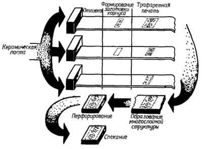 Рисунок 8.8 – Последовательность процесса формирования многослойной заготовки из тугоплавкой керамики, начинающегося с подготовки керамической пасты После отжига пластина готова для заключительных операций по присоединению выводов и металлизации. Для подготовки к пайке выводов на вольфрам наносят никель. Выводы изготавливают из сплава Fe—Ni—Со, называемого коваром, пайку выводов осуществляют эвтектическим сплавом серебро — медь. Все внешние металлические поверхности подвергаются гальванической или электролитической обработке (обычно наносят золото на никель) для повышения качества соединения и защиты от окружающей среды. Многослойные керамические корпусы могут иметь размеры до 100-100 мм с допуском ±0,5% и содержать до 30 слоев. Технология производства керамических корпусов очень эффективна для конструирования сложных корпусов с большим числом сигнальных, заземляющих, питающих, соединительных и герметизирующих слоев. Однако ей присущи три недостатка: трудность получения необходимых допусков размера корпуса из-за большой усадки во время обработки; высокая диэлектрическая проницаемость керамики (9,5) и недостаточная теплопроводность А1203 (табл. 8.2). Проблема допусков затрудняет использование краевой области пластины, высокая диэлектрическая постоянная оказывает вредное воздействие наемкостную нагрузку сигнальной линии. Замена А1203 на ВеО должна значительно улучшить тепловые характеристики и уменьшить диэлектрическую проницаемость корпусов. Корпусы из ВеО найдут широкое применение в будущем благодаря потенциальной возможности улучшения рабочих характеристик керамических корпусов. Высококачественные корпусы разрабатывают с целью улучшения одного или нескольких параметров, таких, как размеры корпуса, число выводов, рабочая частота, термостойкость. § 8.2 Технологическое оборудование для проведения сборки, герметизации микроизделий Мехатронный автомат сборки микромеханических изделий предназначен для сборки микромеханического гидравлического насоса, и состоит из микроманипулятора, микроскопа МБС-10. оснащенного системой технического зрения, загрузочного устройства и непосредственного самого многокоординатного предметного столика. Схема автомата приведена на рис. 8.9.
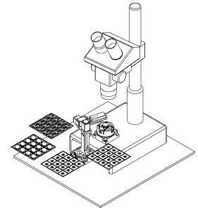 Рисунок 8.9 – Схема сборочного автомата Конструкция предметного столика приведена на рис.8.10 Столик состоит из корпуса 7, в котором выполнены прорези. В прорези вставлены держатели для четырёх пьезоэлектричесих биморфных актюаторов (БПА) 72, с помощью которых осуществляется перемещение по двум осям х, у. БПА прижимаются к держателям с помощью скоб 77, которые стягиваются винтами 14. В дне корпуса сделано отверстие для винта 15. БПА прижимаются к сепараторам 9 при помощи пружин 4. 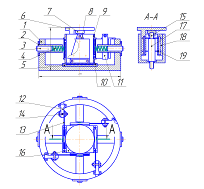 Рисунок 8.10 – Конструкция предметного столика Пружины вставляются во втулки 2 и закрепляются винтами. Пружины, поджатые регулировочными винтами 3, прижимают БПА к шарикам, которые опираются на подвижную платформу столика 16. Платформа также опирается на корпус через шарики, положение которых ограничивает сепаратор 10. Шарики не взаимодействуют с корпусом, а контактируют с круглой пластиной 5. выполненной из твердого материала и утопленной в дно корпуса. Это сделано для того, чтобы избежать образования канавок на дне корпуса в результате износа. Внутри платформы 16 находится однокоординатный SQUIGGLE привод компании New Sса1е Тесhnologies, состоящий из корпуса пьезопривода 17 и винта 15. С помощью этого двигателя осуществляется перемещение стола 6 по оси 2. Стол 6 перемещается вдоль упругих направляющих 19. На конце винта 15 закреплена крышка 7. Автоматизированный комплекс микросборки (АКМ) (рисунок 8.20) предназначен для автоматической сборки таких мини- и микроизделий, как объектив мобильного телефона, шестеренчатый микронасос и др. В состав АКМ входят мини-робот, выполненный на базе сферического шарнира, микроскоп с системой технического зрения, вибропитатели, устройство для склеивания микродеталей и кассета для готовых изделий. Все приводы модулей АКМ выполнены на базе пьезоэлектрических преобразователей — актюаторов, которые позволяют уменьшить габариты мини-робота и других устройств, а также повысить их точность позиционирования. Схема АКМ приведена на рис. 8.11. Микроскоп 2 закреплен на плите 6 с резиновыми опорами для защиты от вибраций. С его помощью нам можно контролировать процесс сборки микродеталей. Для транспортировки деталей на рабочую позицию используются вибропитатели 3. При подаче гармонического напряжения на пьезоэлектрические актюаторы вибропитателя, которые закреплены на нем, микродетали движутся по лотку до нужного места. Устройство для склеивания корпуса микрообъектива видеокамеры и его линзы 4 и вибропитатели 3 расположены по окружности на траектории движения схвата миниробота 1. Вибропитатели установлены на отдельной плите с целью защиты АКМ от вибраций во время сборки микрообъектива видеокамеры. 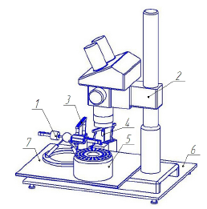 Рисунок 8.11 – Схема автоматизированного комплекса микросборки на базе пьезоэлектрических актюаторов 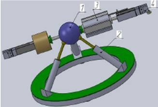 Рисунок 8.12 – Схема мини-робота На основании микроскопа 2 закреплена плита 7, на которой установлен мини-робот. Здесь мы решили использовать мини-робот на базе сферического шарнира с пьезоприводом. Конструкция мини-робота приведена на рис. 8.12. Сфера 1 установлена на трех пьезоэлектрических трубках 2, которые расположены под углом 120. С одной стороны пьезотрубки зафиксированы на основании, а с другой — имеют толкатели, контактирующие со сферой 1. На образующих поверхностях пьезотрубок нанесены электроды, на которые подается напряжение льтразвуковой частоты со сдвигом фаз. Благодаря обратному пьезоэффекту концы толкателей, контактирующие со сферой, совершают движение по эллиптическим траекториям. За счет этого мы можем управлять перемещением сферы в трех плоскостях. Рабочий орган мини-робота — схват может еще двигаться вдоль оси сферы с помощью пьезоэлектрического винта 3 SQUIGGLE производства компании New Sса1е Тесhnologies. В зависимости от формы и размера деталей на схвате могут быть закреплены губки 4. соответствующие требуемым параметрам. 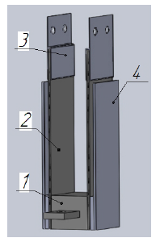 Рисунок 8.13 – Схема схвата Пьезосхват имеет функцию микропозиционирования детали, зажатой в губках схвата. Он содержит корпус 1 (рис. 8.13), два пальца 2, выполненные из БПА со сменными губками 3 на концах. Кроме того, схват оснащен двумя емкостными датчиками 4, образующими обратную связь по положению каждого пальца в отдельности и соответственно по положению детали, зажатой в схвате. На рисунке 8.14 представлена установка герметизации, предназначена для герметизации кристаллов компаундом на печатной плате (подложке). Платы вручную устанавливаются на подогреваемый столик размером 100x200 мм на базовые штифты. Подогреваемый компаунд механически выдавливается из дозатора, закрепленного на 3-координатном столе с шаговым приводом, и наносится по программируемой траектории. Температура подогрева печатной платы и компаунда поддерживается и задается с помощью терморегуляторов. Установка оснащена системой диагностики, упрощающей поиск и устранение неисправностей. 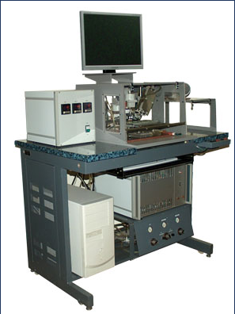 Рисунок 8.14 – Установка герметезации УГ Установка ультразвукового присоединения проволочных выводов ЭМ-4340А1 (рисунок 8.15) предназначена для автоматического присоединения алюминиевых выводов увеличенного диаметра к контактным площадкам мощных транзисторов, гибридных схем и силовых модулей методом ультразвуковой сварки. Установка оснащена системой технического зрения и системой контроля качества сварки. Установка имеет возможность присоединения (разварки) разнообразных по длине, уровням сварки, количеству стежков перемычек, в том числе возможность разварки в "колодцах" глубиной до 12 мм. 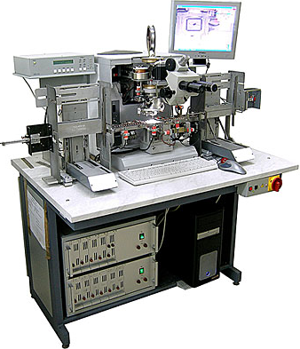 Рисунок 8.15 – Установка ультразвукового присоединения проволочных выводов ЭМ-4340А1 Универсальная установка присоединения микровыводов ЭМ-4320У является разработкой ОАО «Планар-СО» (рисунок 8.16), имеющего более чем 50-летний опыт разработки и производства сборочного оборудования для микроэлектроники. 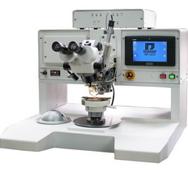 Рисунок 8.16 – Универсальная установка присоединения микровыводов ЭМ-4320У Данная установка обладает широчайшими возможностями по разварке выводов, обеспечивая присоединение к контактным площадкам изделий электронной техники способами «клин-клин» и «шарик-клин», используя термозвуковую, ультразвуковую и контактную сварку. Универсальность установки обеспечивается «портальным» расположением сварочной системы по отношению к обрабатываемому изделию, наличием встроенных технологических блоков, а также быстросменных сварочных головок для каждого из видов сварки. Возможно оснащение установки телевизионной системой для упрощения контроля присоединения выводов. Совмещение первой контактной площадки со сварочным инструментом, направление перемычки и, при необходимости, подсовмещение второй контактной площадки производится вручную с помощью системы «манипулятор – микроскоп - светодиодная указка». Подача поволоки в сварочный инструмент, присоединение и формообразование перемычки, образование шарика на конце золотой проволоки, отделение проволоки от перемычки производится автоматически по программно-заданным параметрам. Задание формообразующих и сварных параметров перемычки и их отображение производится с помощью клавиатуры и жидкокристаллического мини-дисплея. Блок формирования шарика, блок ультразвуковых импульсов и блок контактной сварки оснащены системами контроля и стабилизации заданных параметров. Установка ЭМ-4320У позволяет: -производить разварку выводов на контактных площадках кристаллов кремния, арсенида галлия и других материалов, с кристалла на корпус и/или с корпуса на кристалл, с кристалла на микрополоски печатных плат в технологии поверхностного монтажа; - обеспечить формирование низковысотных перемычек при повторяемости высоты перемычки для кристаллов, расположенных в одной плоскости; - проводить многостежковую разноуровневую разварку выводов между кристаллами, - проводить разноуровневую разварку с контактных площадок кристаллов на корпус или на микрополоски печатной платы для бескорпусных приборов. - обеспечить режим «мягкого касания» сварочного инструмента и контактной площадки за счет программируемого усилия и скорости касания.
|
| (С) БГУИР |